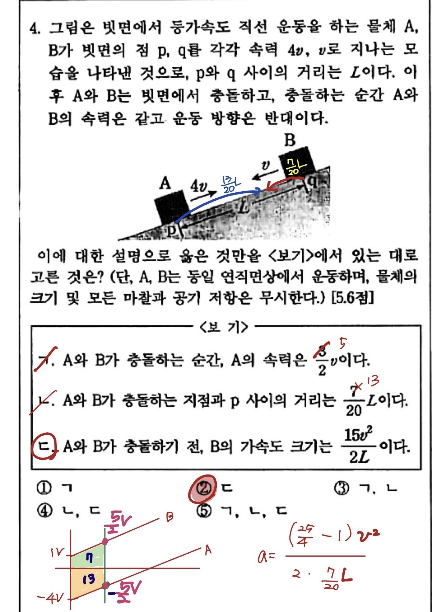
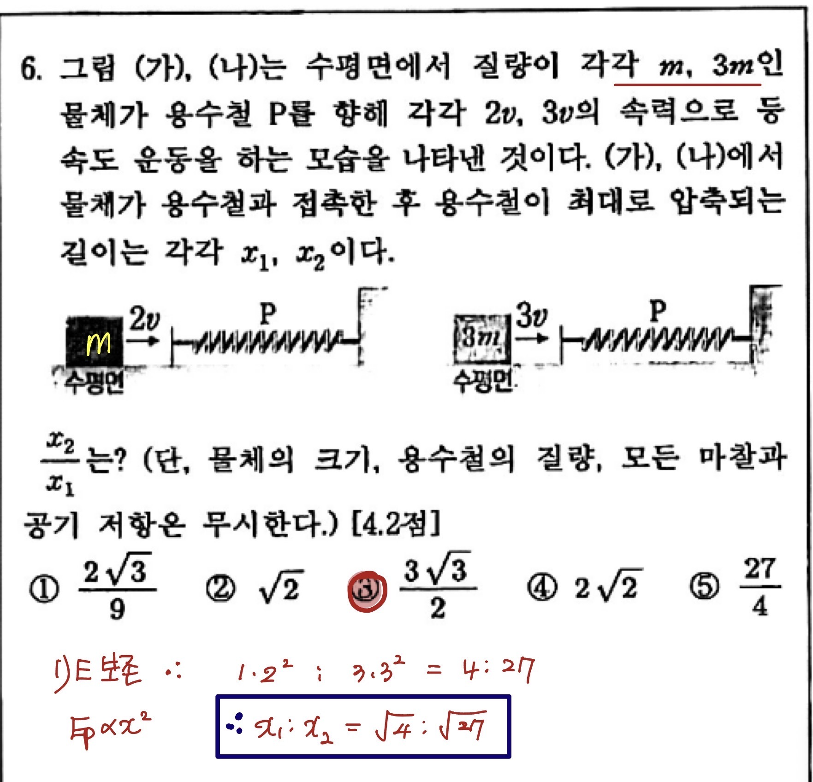
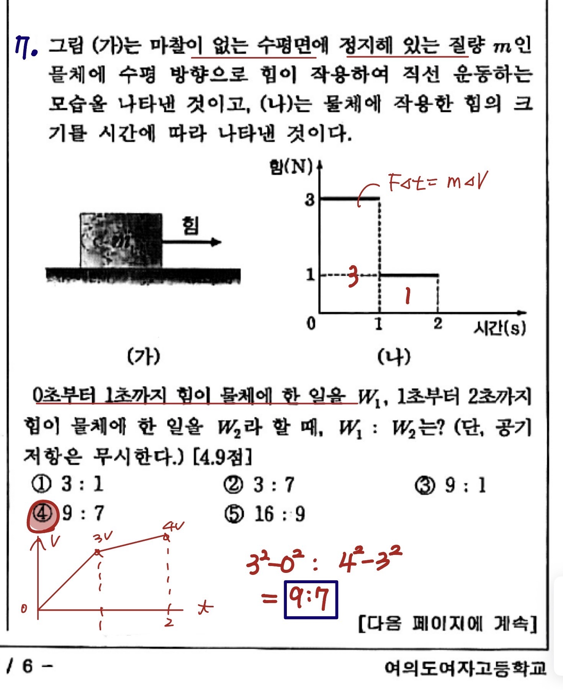
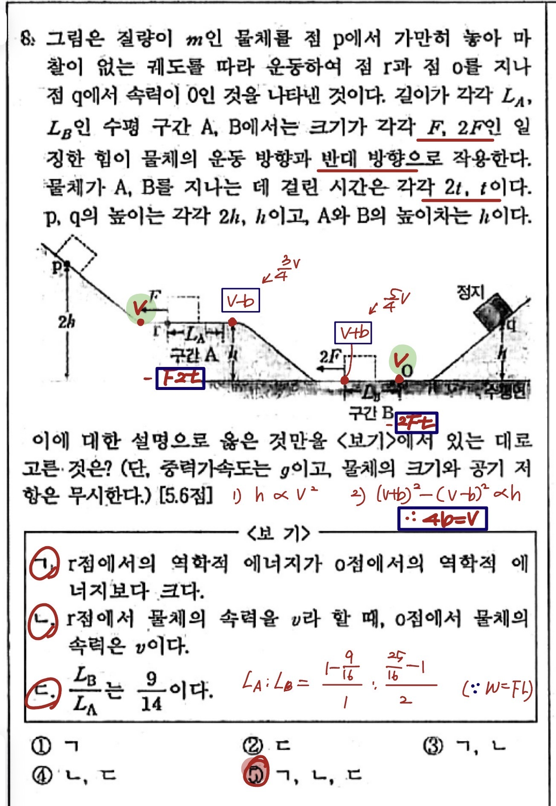
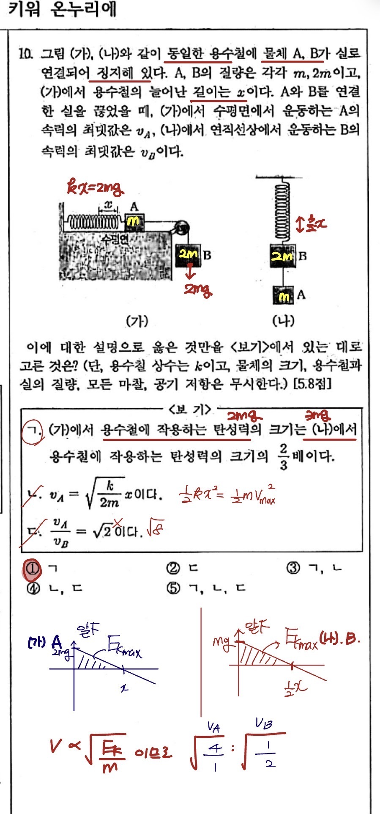

ESC 또는 화면 클릭으로 닫기
전반적으로 평이한 시험이었으나, 변별 5문항(29.9점)은 모두 역학·에너지 단원의 복합 계산형 + 회로 분석입니다. 하·중을 모두 잡으면 70점대 진입이 가능하며, 변별 영역(상)은 시간 안배를 잘 했을 때 도전하는 영역입니다. 학교 공식 분할점수에 따르면 물리학 절대평가 A 등급 컷은 71.7점으로 발표되어 있습니다.
역학 (평형·운동학·뉴턴법칙) 29.0점 / 100점 = 29.0%
에너지·운동량 24.5점 / 100점 = 24.5%
열역학 (열전달·기체일·열기관) 15.7점 / 100점 = 15.7%
전기·축전기 30.8점 / 100점 = 30.8%
| 번호 | 단원 | 핵심 개념 | 배점 | 난이도 | 코멘트 |
|---|---|---|---|---|---|
| 1 | 역학 | 한 점 작용 힘·평형 | 4.9 | 중 | 기울어진 물체가 평형을 이루는 조건. 작용반작용 + 돌림힘 방향. |
| 2 | 역학 | 막대 평형·돌림힘 | 5.2 | 중 | F_B/F_A 비. 돌림힘 평형식 한 줄로 해결. 답: 14/11. |
| 3 | 역학 | 이동거리·평균속도·평균속력 | 3.8 | 하 | 왕복 운동에서 변위와 거리 구분. 평균속도 5m/s. |
| 4 | 역학 | 등가속도 + 충돌 | 5.6 | 상 | 변별 문항. 충돌점 위치(7L/20)·B 가속도(15v²/2L) 모두 계산. v-t 그래프 필수. |
| 5 | 역학 | 자기력·작용반작용·평형 | 4.5 | 중 | 자석 A·B·책상면의 힘 분석. 작용반작용 함정. 답: ㄱ만 옳음. |
| 6 | 에너지 | 탄성위치E ↔ 운동E | 4.2 | 하 | 운동E = 탄성E. x₂/x₁ = 3√3/2. 식 한 줄. |
| 7 | 에너지 | 충격량=Δp + 일=ΔKE | 4.9 | 상 | 변별 문항. 힘-시간 그래프에서 W₁:W₂ 비. 충격량·운동량·일-에너지 정리를 모두 적용. |
| 8 | 에너지 | 일=ΔKE + 중력위치E | 5.6 | 상 | 변별 문항. r↔o 역학적E 비교 + L_B/L_A=9/14. 마찰 + 높이차 복합. 가장 어려움. |
| 9 | 열역학 | 열전달(전도·대류·복사) | 4.0 | 하 | 개념 확인. 에어컨=대류, 태양에너지=복사. ㄱㄴㄷ 모두 옳음. |
| 10 | 에너지 | 용수철+실 끊기 (수평·연직) | 5.8 | 상 | 변별 문항. 탄성력 비(2/3) + v_A/v_B=√2. 평형조건과 에너지보존 동시 적용. |
| 11 | 열역학 | 등압팽창·기체일 | 4.2 | 하 | PΔV = PAΔL. 기본 공식 적용. 압력 P/A 함정. |
| 12 | 열역학 | 열기관 효율 | 4.5 | 중 | η = W/Q_h = (3Q-2Q)/3Q = 1/3. 추 무게-온도변화 함정. |
| 13 | 전기 | 전기장·전위·전기력 | 4.0 | 하 | F=qE, W=qEd. 전위 a |
| 14 | 전기 | 전위차·전기적 위치E | 5.2 | 중 | A: ΔV=6V, B: ΔV=6V → 위치E 변화량 비. A의 전하량 +2C 추론. |
| 15 | 전기 | 멀티탭(병렬연결) | 3.8 | 하 | 병렬 → 전압 일정, 저항 작을수록 소비전력 큼. 학생 B만 옳음. |
| 16 | 전기 | 축전기 충전 | 4.9 | 하 | 전류 방향, b극 부호, 에너지 비례 관계. 단순 암기형. |
| 17 | 전기 | 정전식 키보드(축전기) | 4.9 | 하 | Q=εA·V/d. 면적 비례·간격 감소→전하량 증가. 단순 암기형. |
| 서1 | 역학 | 가속도 측정 실험 (m/M) | 5 | 중 | 실험 표 분석. m/M=1/2, 가속도 ⓒ 계산. 풀이과정 부분점수. |
| 서2 | 에너지 | 운동량 보존(피겨) | 4 | 중 | 충격량 480kg·m/s, B의 속력 v=14m/s. 풀이과정 + 계산 정확성 요구. |
| 서3 | 열역학 | 단열팽창·응결 | 3 | 중 | 단열팽창→온도하강, 응결→방출. 빈칸 채우기 + 단열 이유 서술. |
| 서4 | 전기 | 회로(5각형)·전류 최소·최대 | 8 | 상 | 변별 문항. P 연결점에 따른 합성저항 최대/최소. 최소 b점 1A, 최대 c점 4A. 소비전력 P_z, P_y. 가장 큰 변별 문항(8점). |
대부분 역학·에너지 단원의 복합 계산형 + 회로 분석. 단순 공식 암기로는 풀 수 없고 그래프 해석·평형 조건·에너지 보존을 종합적으로 적용해야 합니다. 변별 5문항 중 2~3개를 정답 처리하면 85점+ 도전 영역입니다. 다음 섹션 "✍️ 미영쌤 손풀이 답지"에서 4·7·8·10번 + 6번(보너스) 풀이 노트를 확인하세요.
최과학 과학전문학원 수업·직보에서 다룬 핵심 5개 문항의 미영쌤 풀이 노트입니다. 변별 문항 4개(4·7·8·10번) + 응용 1개(6번)를 손글씨로 정리했습니다. 각 풀이 사진을 클릭하면 확대되어 자세히 볼 수 있습니다.





하 33.8점 / 중 36.3점 / 상 29.9점. 즉 하·중을 모두 잡으면 70점대 진입이 가능합니다. 변별 영역(상)은 시간 안배를 잘 했을 때 도전하는 영역입니다.
중간고사와 완전히 다른 단원입니다. 자기·빛·물질과 시공간 모두 새로 빌드업해야 하므로 5월 3일부터 9주간 체계적 학습이 필수입니다.
| 교재 | 대단원 | 중단원 | 핵심 학습 포인트 |
|---|---|---|---|
| 하이탑 2권 | 2. 자기 | 물질의 자성 | 강자성·상자성·반자성, 자기구역, 자기화 |
| 전류의 자기 작용 | 직선·원형·솔레노이드 자기장, 오른손 법칙 | ||
| 전자기 유도 | 패러데이 법칙, 렌츠의 법칙, 유도기전력 | ||
| 하이탑 3권 | 1. 빛과 이중성 | 빛의 중첩과 간섭 | 영의 이중슬릿, 보강·상쇄간섭, 박막간섭 |
| 빛의 굴절 | 볼록·오목렌즈 작도법(2022 개정 명시), 굴절률 | ||
| 빛과 물질의 이중성 | 광전효과, 드브로이 물질파, 콤프턴 산란 | ||
| 2. 물질과 시공간 | 스펙트럼과 에너지 준위 | 보어 모형, 수소 원자 스펙트럼 | |
| 에너지띠와 반도체 | 전도띠·원자가띠, 다이오드(p-n접합)(2022 개정 포함) | ||
| 특수 상대성 이론 | 시간팽창·길이수축만(2022 개정 — 동시성의 상대성 제외) |
• 빛의 굴절: 볼록·오목렌즈 작도법 명시 출제 가능
• 특수 상대성: 시간팽창·길이수축만 학습 (동시성의 상대성은 제외)
• 에너지띠와 반도체: 다이오드(p-n접합) 포함 — 작년 기출 다시 풀어볼 것
일요반 · 12:00 ~ 15:00 (수업 3시간 + 테스트 30~60분)
월요반 · 15:15 ~ 18:15 (수업 3시간 + 테스트 30~60분)
| 주차 | 일요반 | 월요반 | 학습 단원 | 핵심 키워드 |
|---|---|---|---|---|
| 1주 | 5/3 (일) | 5/4 (월) | 물질의 자성 | 강자성·상자성·반자성 |
| 2주 | 5/10 (일) | 5/11 (월) | 전류의 자기 작용 | 직선·원형·솔레노이드 |
| 3주 | 5/17 (일) | 5/18 (월) | 전자기 유도 | 패러데이·렌츠 법칙 |
| 4주 | 5/24 (일) | 5/25 (월) | 빛의 중첩과 간섭 | 영의 실험·박막간섭 |
| 5주 | 5/31 (일) | 6/1 (월) | 빛의 굴절 | 볼록·오목렌즈 작도 |
| 6주 | 6/7 (일) | 6/8 (월) | 빛과 물질의 이중성 | 광전효과·드브로이 |
| 7주 | 6/14 (일) | 6/15 (월) | 스펙트럼·에너지띠·반도체 | 보어모형·다이오드 |
| 8주 | 6/21 (일) | 6/22 (월) | 특수 상대성 이론 | 시간팽창·길이수축 |
| 9주 | 6/28 (일) | 6/29 (월) | 전 범위 직보·총정리 | 기출문제 + 모의고사 |
① 자기 단원의 오른손 법칙 직관화
② 빛의 굴절 작도법 손으로 익히기
③ 매주 테스트 + 오답 정리로 약점 0으로